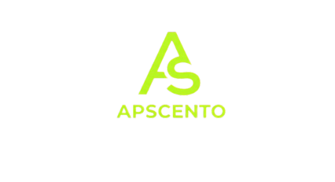

Pinio
O aplikacji
W ROZWOJU
Pinio
Aplikacja społecznościowa oparta na mapie miejsc. Pinio pozwala odkrywać, zapisywać i oceniać ulubione miejsca, zdobywać punkty doświadczenia i odznaki oraz dzielić się odkryciami ze znajomymi na wspólnej mapie.
- Interaktywna mapa z warstwami kategorii miejsc
- System XP i odznak za odwiedzone miejsca
- Znajomi, profile i wspólna tablica aktywności
- Zapisywanie i polecanie ulubionych miejsc
Zrzuty ekranu


Dołącz do Pinio
Aplikacja jest w aktywnym rozwoju. Zarejestruj się, aby otrzymać dostęp jako pierwszy/a.
Historia aktualizacji
v0.1.0
Sierpień 2026
- Pierwsza wersja robocza aplikacji w rozwoju
- Mapa miejsc, system XP/odznak, znajomi